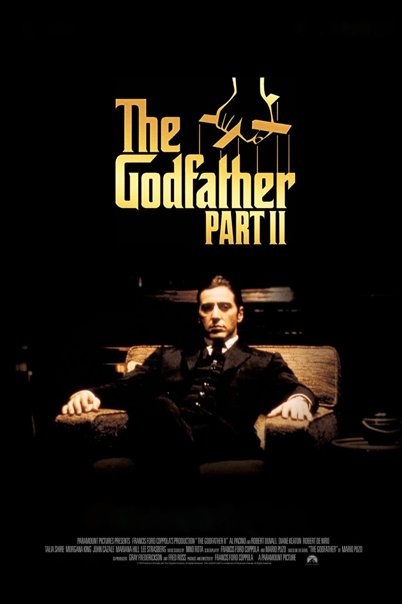

The Godfather Part II (1974) is a sprawling crime epic that serves as both a sequel and a prequel, expanding the Corleone family saga by paralleling Michael Corleone’s reign with the rise of his father, Vito Corleone. The film is praised for its deep storytelling, emotional complexity, and masterful structure that contrasts Michael’s increasing isolation and moral decay with Vito’s humble ascent to power. Al Pacino delivers a colder, more hardened performance, while Robert De Niro’s portrayal of young Vito is subtle and compelling. Often considered equal to or even surpassing the original, it’s widely regarded as one of the greatest films ever made, especially for its ambitious narrative scope and tragic exploration of power and family legacy.
